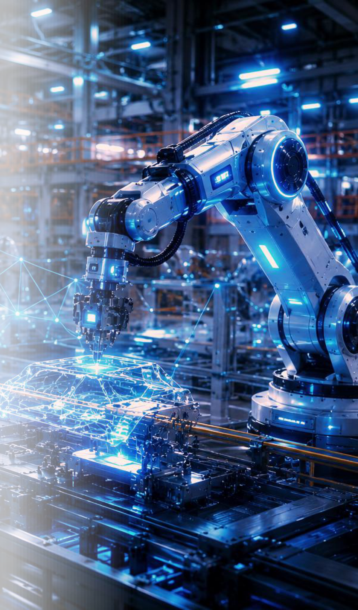
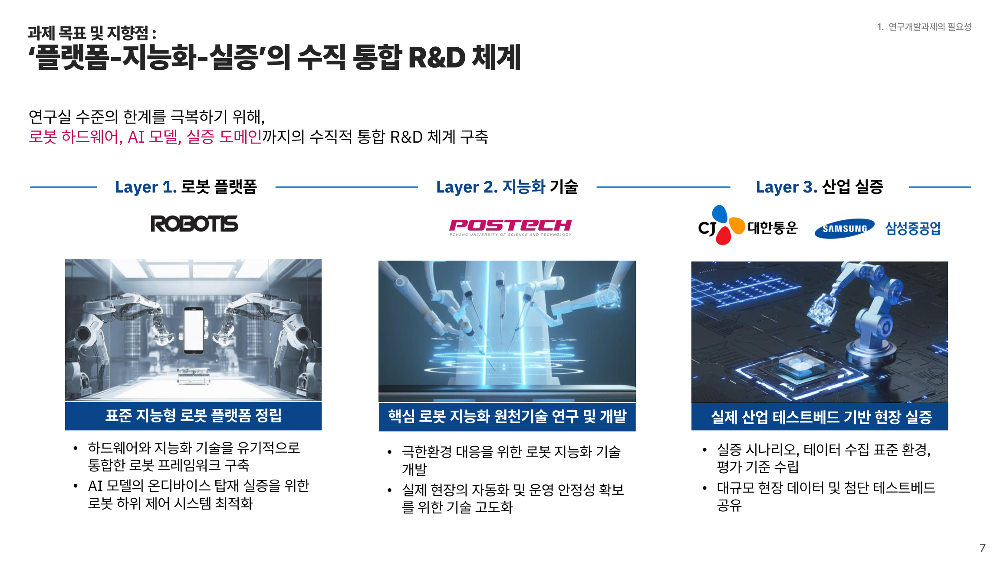
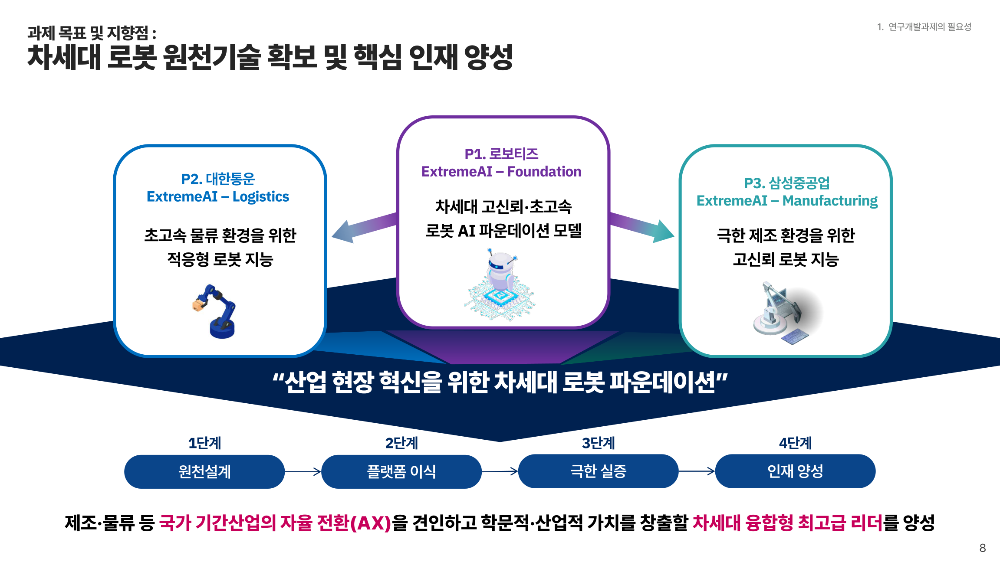

P1 ExtremeAI-Foundation
차세대 로봇 파운데이션 모델
극한환경에 대응하는 온디바이스 로봇 모델, 적응형 학습 및 추론 구조, 설명가능하고 안전한 행동 생성 기술을 연구합니다.
협력 기업: 로보티즈
AI 스타 펠로우십
Resilient and Generalizable AI for Extreme Environments
연구실의 AI 원천기술을 로봇 플랫폼과 실제 산업 현장까지 연결하여, 극한환경에서도 신뢰할 수 있는 차세대 로봇 지능을 개발합니다.

01 / ABOUT
본 과제는 실제 산업 환경의 불완전한 관측, 예기치 못한 상황, 새로운 작업 조건에서도 안정적으로 동작하는 로봇 인공지능을 목표로 합니다.
이를 위해 로봇 플랫폼과 지능화 원천기술, 산업 실증을 연결하는 수직 통합 연구개발 체계를 구축하고, 로봇 파운데이션 모델과 물류·제조 특화 기술을 공동 개발합니다.

02 / RESEARCH
P1 ExtremeAI-Foundation
극한환경에 대응하는 온디바이스 로봇 모델, 적응형 학습 및 추론 구조, 설명가능하고 안전한 행동 생성 기술을 연구합니다.
협력 기업: 로보티즈
P2 ExtremeAI-Logistics
비정형 물체 조작과 예외 상황 대응, 로봇 작업 계획 및 다중 로봇 운영의 안정성을 높이는 기술을 개발합니다.
협력 기업: CJ대한통운
P3 ExtremeAI-Manufacturing
강한 광원·가림·시각 열화 등 까다로운 제조 조건에서 이미징, 이상 탐지, 능동 인지 제어 기술을 개발합니다.
협력 기업: 삼성중공업

03 / ROADMAP
2026–2031 (3단계 / 6년)
온디바이스 로봇 파운데이션 모델, 물류 상태 이해 및 로봇 조작, 극한 시야 이미징·이상 탐지의 초기 기술을 개발합니다.
로봇 모델의 일반화와 신뢰성을 고도화하고, 물류 예외 상황 대응 및 극한 시각 조건에서의 능동 인지·실환경 적응 기술을 확보합니다.
원천기술을 로봇 플랫폼에 통합하여 물류·제조 현장의 실제 작업 환경에서 검증합니다.
04 / PEOPLE & PARTNERS
멀티모달·RAG·LLM 기반 추론
효율적 기계학습 및 AI 최적화
설명가능성 및 안정성 기반 VLA
무중단 작업 지능
적응형 자율 조작
HRI 기반 개입 및 협업
분광·편광 기반 이미징 시스템
이상 탐지 및 품질 분석
극한 시야 강건형 로봇 인지·제어
로봇 플랫폼 제공 및 온디바이스 로봇 AI 기술 검증·통합
물류 테스트베드 및 현장 데이터 기반 물류 로봇 지능 실증
조선·제조 현장 데이터와 실증 환경을 활용한 고신뢰 로봇 AI 검증
05 / IMPACT
차세대 로봇 파운데이션 모델과 극한환경 적응형 인지·제어 기술 확보
현장 실증을 통한 공정 자동화, 운영 안정성 향상 및 산업 경쟁력 강화
위험 작업 부담과 작업 실패를 줄이고 고위험·비정형 환경의 자동화 확대
산업 현장 문제 중심의 PBL과 산학 교류를 통해 로봇·AI·현장을 잇는 연구인력 육성
06 / EVENTS
2026. 11. 27. (금) · RIST 4동
연구성과 공유 및 차년도 산학협력 논의